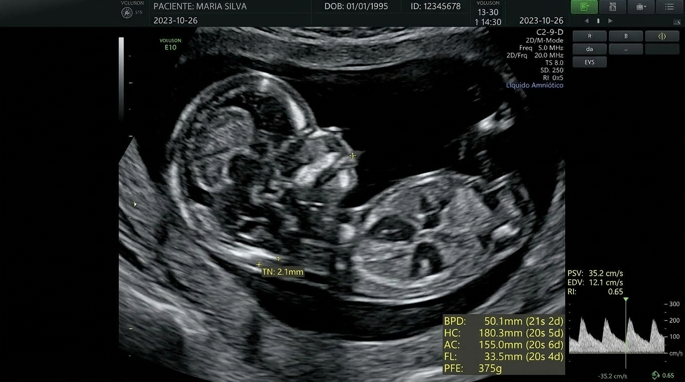
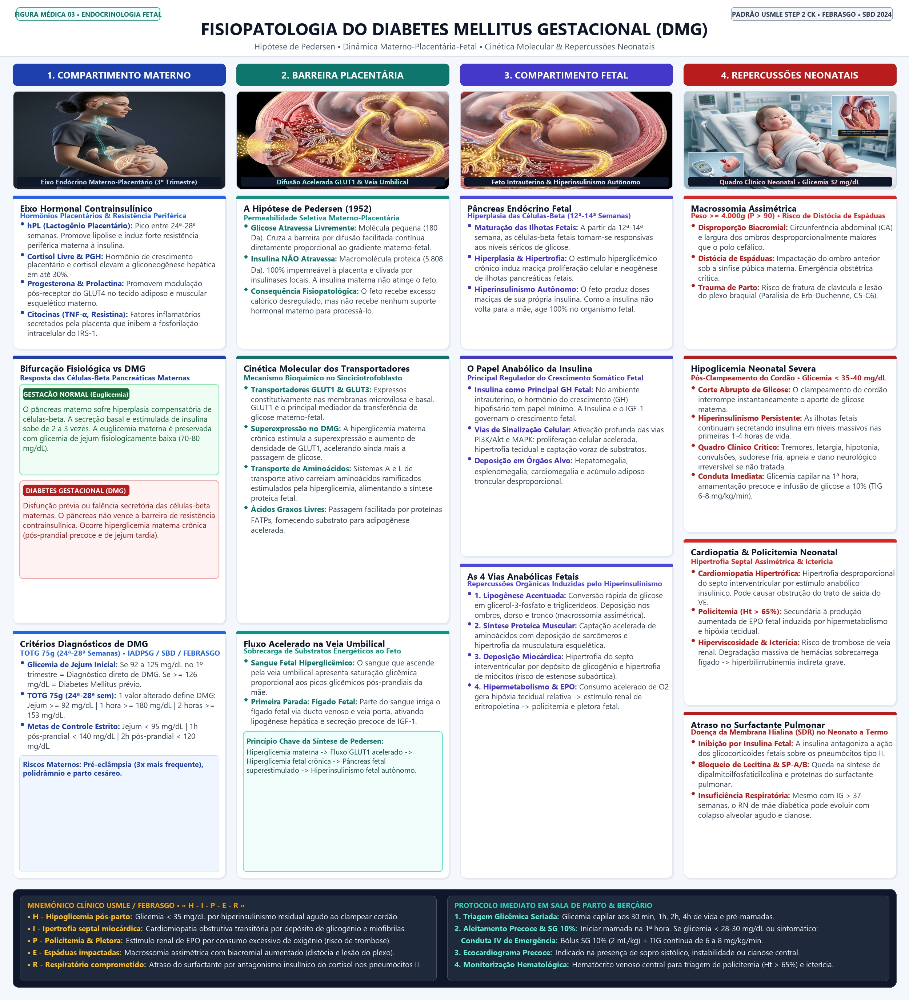
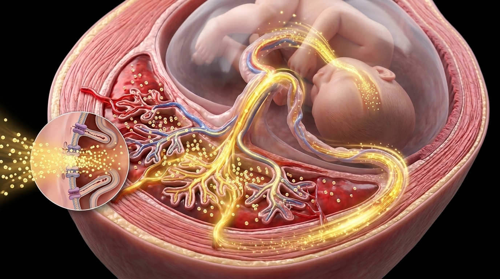
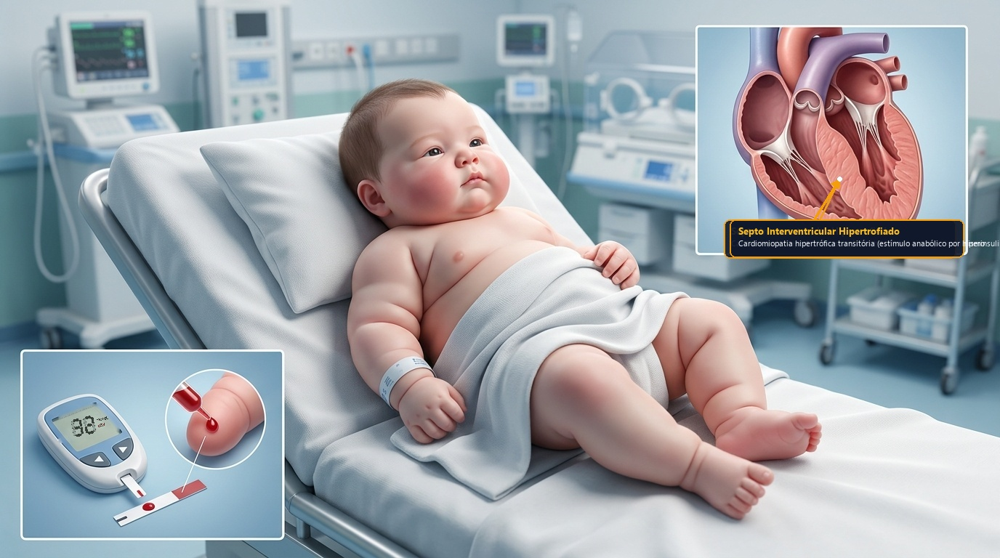
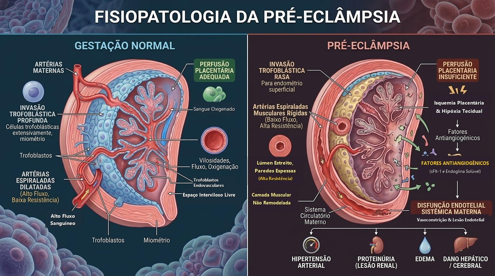
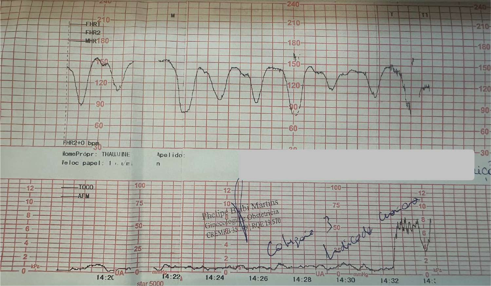
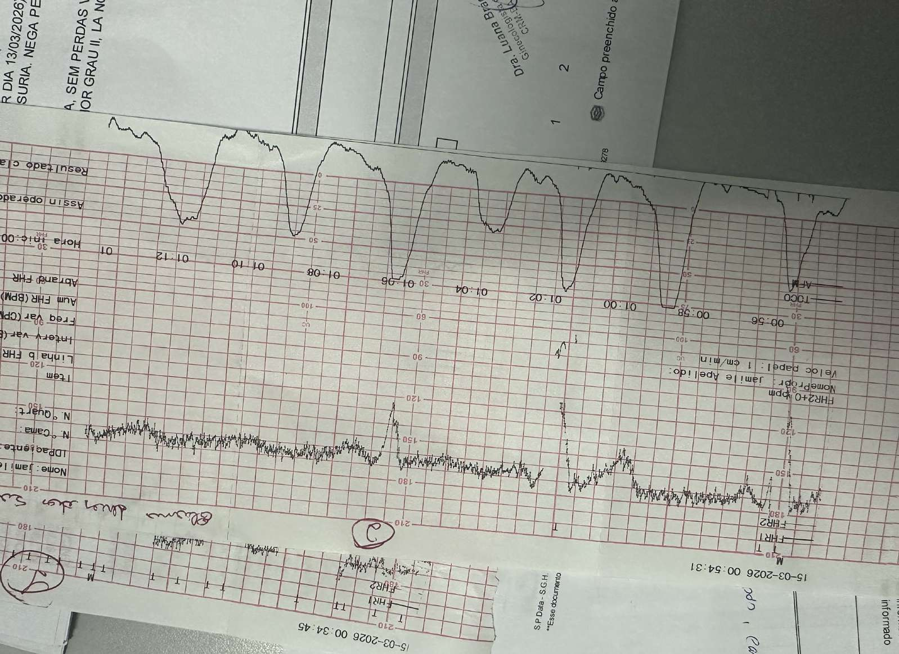
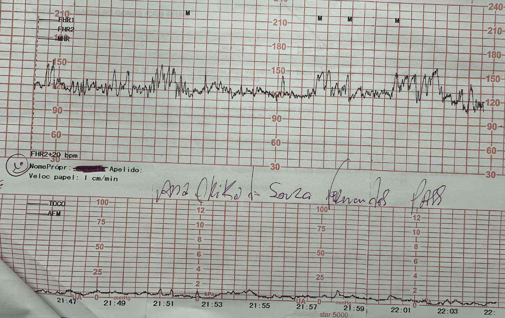
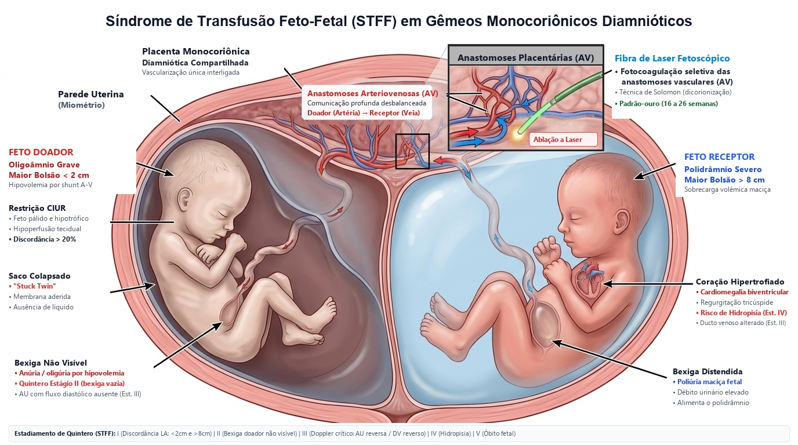
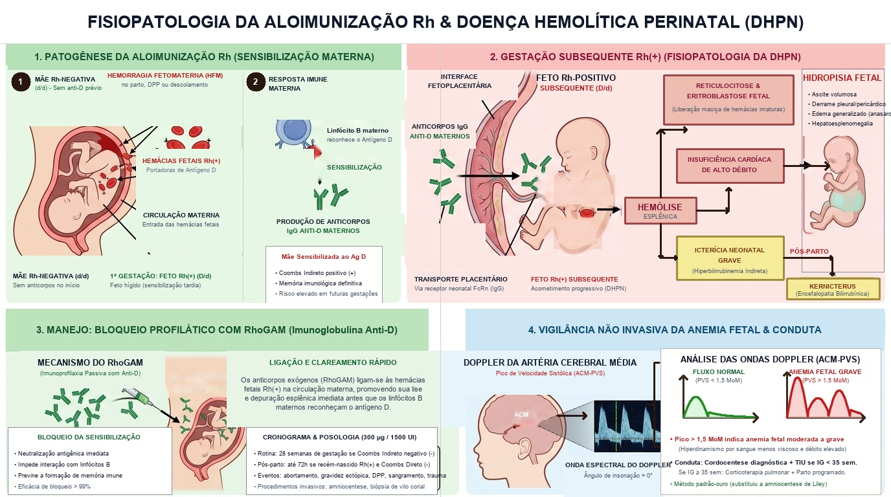

Pré-Natal de Baixo Risco & Manobras de Leopold
Como explicar para uma criança de 5 anos:
"Pense no útero como uma casinha muito quentinha e segura onde o bebezinho vai morar durante 9 meses. O médico do pré-natal é como um engenheiro carinhoso que vai lá de vez em quando para ver se a água da piscina está limpa, se a comidinha está chegando bem e se as paredes da casinha estão fortes. Se tiver qualquer coisinha errada, ele conserta antes de virar problema!"
Cronograma de Consultas Pré-Natais (ACOG / OMS)
| Idade Gestacional | Periodicidade | Meta Clínica |
|---|---|---|
| Até 28 semanas | Mensal | Rastreamento genético, morfológico e TOTG 75g. |
| 28 a 36 semanas | Quinzenal | Vigilância de PA, crescimento fetal e profilaxia Rh. |
| 36 a 41 semanas | Semanal | Rastreio de GBS, avaliação de estática e bacia. |
* Ministério da Saúde do Brasil preconiza no mínimo 6 consultas; OMS recomenda idealmente 8 ou mais.
Anamnese Obstétrica Estruturada (G-P-A-C)
Na história obstétrica, registramos o número total de gestações (G), partos a termo e pré-termo (P), abortamentos (A) e cesarianas (C). No modelo americano (TPAL): Term, Preterm, Abortions, Living children.
As 4 Manobras de Leopold-Zweifel (Palpação Obstétrica Sistemática)

Calculadora da Regra de Naegele, DPP & Idade Gestacional
Fórmula universal: DPP = DUM + 7 dias - 3 meses + 1 ano. Calcula instantaneamente a Data Provável do Parto, semanas e dias atuais, trimestre e exames recomendados no momento!
Condutas & Exames Recomendados Para Esta Fase:
Exames Pré-Natais, Ultrassonografia, Rastreio Genético & GBS
Como explicar para uma criança de 5 anos:
"O ultrassom é como uma câmera fotográfica mágica que não precisa de luz nem flash. Ela solta um sonzinho bem baixinho que a gente não escuta (ultrassom) que bate na barriga e volta desenhando o bebezinho na tela! Com essa câmera mágica a gente vê os dedinhos, o coração batendo 'tum-tum-tum' e mede o tamanho dele."
Ultrassonografia Fetal de 2º Trimestre & Translucência Nucal

Rastreamento de Aneuploidias (1º Trimestre)
- Translucência Nucal (TN): Avaliada entre 11 e 13 semanas e 6 dias (CCN 45 a 84 mm). Valor patológico: ≥ 3,5 mm (ou acima do p95). Forte associação com Trissomia 21 (Down), cardiopatias congênitas graves e Síndrome de Turner.
- Marcadores Bioquímicos: β-hCG livre elevado + PAPP-A diminuída = padrão clássico da Síndrome de Down.
- NIPT (Cell-free DNA): DNA fetal livre circulante no sangue materno a partir de 10 semanas. Sensibilidade > 99% e especificidade > 99,9% para Trissomia 21. É teste de rastreio (se positivo, requer confirmação diagnóstica por biópsia de vilo corial ou amniocentese).
Profilaxia de Streptococcus agalactiae (GBS)
- Cultura positiva na gestação atual
- Filho anterior com sepse neonatal por GBS
- Bacteriúria por GBS em qualquer fase da gestação atual
- Status desconhecido + Febre ≥ 38°C, RPMO ≥ 18h ou Parto < 37 sem
Penicilina G Cristalina: 5 milhões UI IV (dose de ataque), seguida de 2,5 a 3,0 milhões UI IV a cada 4 horas até o parto (mínimo 4h de infusão antes do nascimento).
Imunizações na Gravidez: Regras de Ouro
Vacinas PERMITIDAS e Recomendadas (Inativadas)
- 1. dTpa (Tríplice Acelular do Adulto) Obrigatória em CADA gestação, idealmente entre 27 e 36 semanas (ou a partir da 20ª sem). O objetivo primário é a passagem transplacentária de anticorpos anti-coqueluche para proteger o recém-nascido nos primeiros meses de vida!
- 2. Influenza (Vírus Inativado) Dose única anual em qualquer trimestre da gestação. Gestantes têm risco 4 a 5x maior de hospitalização e insuficiência respiratória por gripe.
- 3. Hepatite B (Recombinante) 3 doses (0, 1 e 6 meses) para gestantes não vacinadas ou com esquema incompleto.
- 4. COVID-19 (mRNA / Proteína Recombinante) Recomendada pelo Ministério da Saúde em qualquer trimestre gestacional. Esquema basal + reforços conforme calendário oficial. Reduz drasticamente internações por insuficiência respiratória grave em gestantes e transfere anticorpos protetores neutralizantes ao recém-nascido.
Vacinas CONTRAINDICADAS (Vírus Vivos Atenuados)
O risco teórico é a replicação viral transplacentária e desenvolvimento de infecção congênita grave ou teratogênese.
- Tríplice Viral (SCR - Sarampo, Caxumba, Rubéola) PROIBIDA
- Varicela (Catapora) PROIBIDA
- Febre Amarela (Apenas sob risco epidemiológico extremo) EVITAR
- BCG & Dengue PROIBIDA
Doenças Maternas: DMG, Hipertensão & Pré-Eclâmpsia
Diabetes Mellitus Gestacional (DMG) & Hipótese de Pedersen
Como explicar para uma criança de 5 anos:
"Imagine que a placenta fabrica um pozinho mágico que deixa a mamãe com preguiça de usar o açúcar da comida, para sobrar bastante açúcar pro bebê crescer. Mas se sobrar açúcar DEMAIS, o bebezinho começa a comer muitos doces sem parar e fica gordinho feito um fofão (macrossomia). Na hora que corta o cordão umbilical, a fábrica de doces para de repente, e o corpinho do bebê toma um susto e fica sem açúcar nenhum no sangue (hipoglicemia)!"
Fisiopatologia do Diabetes Gestacional & Hipótese de Pedersen
Dinâmica materno-placentária-fetal, resistência à insulina por hPL e consequências neonatais.

3A • Eixo Endócrino Materno
Ação contrainsulínica de hPL, cortisol e progesterona com sobrecarga das células-β maternas.

3D Render3B • Difusão Placentária (GLUT1)
Fluxo acelerado de glicose via transportadores GLUT1 para a veia umbilical e feto.

3D Render3C • Macrossomia & Hipoglicemia (32 mg/dL)
Glicemia crítica de 32 mg/dL pós-clampeamento e seta no septo interventricular hipertrofiado.
Classificação Prognóstica e Evolutiva de Priscilla White
Selecione uma classe para inspecionar idade de início, duração, vasculopatia associada e conduta terapêutica:
Fatores de Risco Clínicos, Metabólicos & Obstétricos (SBD / FEBRASGO)
Rastreio Universal Indicado- • Idade materna avançada (≥ 35 anos)
- • Sobrepeso ou Obesidade (IMC pré-gestacional ≥ 25 kg/m²)
- • Antecedentes familiares de DM em parentes de 1º grau (pais e irmãos)
- • Sedentarismo e ganho ponderal excessivo precoce
- • HbA1c prévia ≥ 5,7% (indicativo de pré-diabetes)
- • Síndrome dos Ovários Policísticos (SOP)
- • Hipertrigliceridemia e dislipidemia mista
- • Hipertensão Arterial Sistêmica (HAS crônica)
- • Acantose nigricans (marcador de resistência insulínica)
- • Doença cardiovascular aterosclerótica
- • Uso de medicamentos hiperglicemiantes (corticoides, antirretrovirais)
- • ≥ 2 perdas gestacionais prévias (abortamentos de repetição)
- • Diabetes Gestacional em gestação anterior
- • Macrossomia fetal prévia (recém-nascido > 4.000 g)
- • Feto Grande para a Idade Gestacional (GIG)
- • Polidrâmnio em gestação prévia
- • Óbito fetal ou neonatal inexplicado sem causa aparente
- • Malformação fetal em gestação anterior
Estratégias Diagnósticas por Viabilidade Técnica e Financeira
Selecione o fluxo do seu serviço de saúde para consultar o algoritmo de rastreamento:
Janela fisiológica ideal de aumento dos hormônios contrainsulínicos placentários (hPL, cortisol, prolactina e progesterona).
Realizar o teste sem demora para evitar diagnóstico tardio de macrossomia e polidrâmnio.
- • Jejum: 92 a 125 mg/dL
- • 1 hora pós-sobrecarga: ≥ 180 mg/dL
- • 2 horas pós-sobrecarga: 153 a 199 mg/dL
- • Jejum: ≥ 126 mg/dL OU
- • 2 horas pós-sobrecarga: ≥ 200 mg/dL
⚠️ Atenção Metodológica: Esta tabela aplica-se exclusivamente a adultos NÃO gestantes. Na gestação, os pontos de corte do TOTG 75g são mais rigorosos (IADPSG/FEBRASGO): Jejum ≥ 92 mg/dL, 1h ≥ 180 mg/dL e 2h ≥ 153 mg/dL definem DMG!
| Critério Laboratorial | Normal | Pré-Diabetes | Diabetes Mellitus (DM) |
|---|---|---|---|
| Glicemia de Jejum (mg/dL) | < 100 | 100 a 125 | ≥ 126 |
| Glicemia ao Acaso + Sintomas Clássicos | — | — | ≥ 200 |
| Glicemia 1h no TTGO 75g (mg/dL) | < 155 | 155 a 208 | ≥ 209 |
| Glicemia 2h no TTGO 75g (mg/dL) | < 140 | 140 a 199 | ≥ 200 |
| Hemoglobina Glicada (HbA1c %) | < 5,7% | 5,7% a 6,4% | ≥ 6,5% |
Manejo Periconcepcional & Avaliação de Órgão-Alvo no DM Prévio
Diretriz SBD / Zugaib- • Função Renal: Dosagem de Ureia, Creatinina sérica e Microalbuminúria/Proteinúria de 24h (20-40% têm nefropatia; prediz risco aumentado de pré-eclâmpsia sobreposta).
- • Fundo de Olho: Mapeamento de retina antes da gestação. Atenção: a fotocoagulação a laser NÃO é contraindicada na gestação se houver retinopatia proliferativa!
- • Eletrocardiograma (ECG): Avaliação de coronariopatia assintomática e sobrecarga ventricular.
- • Função Tireoidiana: Dosagem de TSH e T4 livre (alta associação de DM1 com tireoidite autoimune).
- • Profilaxia Vascular: Prescrever Aspirina em baixa dose (100 a 150 mg/dia, 100 mg no Brasil) para prevenção de pré-eclâmpsia, iniciada entre a 12ª e a 16ª semana (FEBRASGO 2024 / RBEHG 2025).
Mudança de Estilo de Vida (MEV) & Calculadora de Ganho de Peso
Dieta fracionada e exercício físico aeróbico (150 min/semana, 30 min 5x/semana). 60% das gestantes alcançam a euglicemia sem medicação!
Metas do Perfil Glicêmico Capilar & Critério de Início Farmacológico
Tabela 38.1 FEBRASGO / SBD🎯 Meta de Controle: Pelo menos 70% das medidas devem estar dentro da normalidade. Se falhar após 2 semanas de dieta, iniciar farmacoterapia!
"O critério de crescimento fetal para início de insulinoterapia, INDEPENDENTEMENTE dos valores da glicose materna, PODE SER CONSIDERADO quando a medida da Circunferência Abdominal fetal ≥ percentil 75 OU Peso Fetal Estimado ≥ percentil 90 em ultrassonografia realizada entre a 29ª e a 33ª semana de gestação (SBD 2024, Recomendação 3, Grau IIb/Nível B)."
Calculadora de Insulina NPH (Padrão Ouro)
0,5 UI/kg/diaA insulina não atravessa a barreira placentária e é a escolha prioritária em todas as diretrizes (FEBRASGO / SBD).
Metformina no DMG & Contraindicações Formais
500 a 3000 mg/diaUtilizada em 2 a 3 tomadas diárias quando há inacessibilidade, recusa/fobia grave a agulhas de insulina ou em associação se dose > 2 U/kg/dia.
- 🚨 1. Fetos com peso abaixo do percentil 50 (< p50)
- 🚨 2. Presença de Crescimento Intrauterino Restrito (CIUR)
- 🚨 3. Gestante com Doença Renal Crônica (DRC)
A metformina atravessa a placenta livremente. Em fetos já restritos ou abaixo do percentil 50, ela agrava a restrição ponderal fetal!
Cetoacidose Diabética (CAD) na Gestação • Emergência Médica
1 a 3% das Gestantes DiabéticasQuadro agudo desencadeado por infecção, omissão de insulina ou uso de corticoides. Apresenta-se com náuseas, vômitos, dor abdominal, poliúria, polidipsia, taquicardia, hipotensão e hiperventilação acidótica (respiração de Kussmaul).
Consequências Fetais e Neonatais do Hiperinsulinismo (Zugaib 2016)
Fisiopatologia em CascataHiperinsulinemia fetal → anabolismo excessivo → macrossomia → alta demanda metabólica de oxigênio → hipoxemia crônica e policitemia.
Hiperglicemia fetal ultrapassa o limiar renal → diurese osmótica fetal → polidrâmnio (ILA > 24 cm) → sobredistensão uterina e parto prematuro.
O hiperinsulinismo fetal antagoniza a ação do cortisol nos pneumócitos tipo II, inibindo a síntese de lecitina/dipalmitoilfosfatidilcolina e atrasando a maturação pulmonar.
No clampeamento, o aporte transplacentário de glicose cessa, mas as células-β hiperplásicas continuam secretando insulina por horas → queda drástica da glicose (< 40 mg/dL).
Cronograma de Avaliação da Vitalidade Fetal no Diabetes (Rezende / Zugaib)
Protocolo de MonitorizaçãoTranslucência Nucal e datação exata.
Rastreio de malformações de órgãos.
Pesquisa de hipertrofia septal assimétrica.
Estimativa de peso e índice de líquido amniótico.
Avaliação de insuficiência placentária.
Nas insulinodependentes + Mobilograma diário.
Momento do Parto & Manejo Intraparto
Zugaib 2016• DMG A1 (controlado com MEV): aguardar início espontâneo até 40+0 semanas.
• DMG A2 (com insulina) ou DM prévio bem controlado: entre 39+0 e 39+6 semanas (parto antes de 39 sem só se mau controle ou vasculopatia, entre 37+0 e 38+6 sem).
• Cesariana Eletiva: Ponderada se PFE > 4.500 g em diabéticas (ou > 5.000 g sem diabetes) para prevenção de distócia de espáduas e lesão de plexo braquial.
Puerpério & Reclassificação aos 42 Dias
TOTG 75g Pós-Parto• DM 1: Retornar à dose pré-gestacional de insulina.
• DM 2: Metade da dose de insulina do final da gravidez ou antidiabético oral prévio.
• DMG: Suspender imediatamente a insulina e a dieta restritiva!
• Atenção: A amamentação consome glicose materna e reduz necessidade de medicação.
Jejum < 100
2h < 140
Jejum 100-125
2h 140-199
Jejum ≥ 126
2h ≥ 200
Síndromes Hipertensivas na Gravidez, Pré-Eclâmpsia & Cuidados Críticos
Respondem por cerca de uma em cada sete mortes maternas no planeta. No mundo desenvolvido, é a 2ª causa de óbito.
Líder absoluta de mortalidade materna direta em território brasileiro, superando hemorragia pós-parto e infecções.
Causa primária de AVC materno, eclâmpsia, DPP, rotura hepática, prematuridade iatrogênica extrema e óbito fetal.
Aumenta em 2 a 4 vezes o risco ao longo da vida de infarto (IAM), AVC, insuficiência renal crônica e HAS prematura.
Como explicar para uma criança de 5 anos:
"Pense que os canos de sangue da mamãe são como mangueiras de jardim. Na gravidez, as mangueiras têm que ficar bem gordinhas e macias para o sangue correr suave. Na pré-eclâmpsia, os caninhos ficaram apertados e rígidos, aí a água passa com tanta força (pressão alta) que começa a vazar buraquinhos nas paredes da mangueira, inchando o corpo da mamãe e machucando os rins."
Classificação em 4 Grupos Clínicos (RBEHG / ISSHP / FEBRASGO)
Definições cronológicas e prognósticas oficiaisHipertensão (PAS ≥ 140 ou PAD ≥ 90 mmHg) que surge após a 20ª semana de gestação em paciente previamente normotensa, SEM proteinúria significativa e SEM disfunção de órgão-alvo materno.
Hipertensão arterial diagnosticada antes da gestação ou identificada antes da 20ª semana de gravidez. Também abrange a hipertensão diagnosticada na gestação que persiste além de 12 semanas pós-parto.
Gestante com HAC conhecida que após 20 semanas apresenta: piora súbita da PA necessitando escalonamento de doses, surgimento de proteinúria nova (ou aumento repentino de 2 a 3x da proteinúria basal), ou qualquer disfunção de órgão-alvo.
PA ≥ 140/90 após 20 semanas com proteinúria significativa OU disfunção orgânica materna / disfunção útero-placentária. Eclâmpsia: ocorrência de convulsões tônico-clônicas generalizadas na vigência de pré-eclâmpsia.
Diagnóstico Diferencial: Pré-Eclâmpsia vs. Hipertensão Arterial Crônica (Slide 9)
Tabela de Diferenciação RBEHG| Critério / Parâmetro Clínico | Pré-Eclâmpsia (PE) | Hipertensão Arterial Crônica (HAC) |
|---|---|---|
| Faixa Etária Materna | Extremos da vida fértil (< 18 ou > 35 anos) | Mais frequente em mulheres > 35 anos |
| Paridade | Tipicamente Primigesta / Nulípara | Mais comumente Multíparas |
| Início das Manifestações | Após 20 semanas (3º trimestre / intraparto / puerpério) | Antes de 20 semanas de IG ou pré-gestacional |
| Comportamento Pressórico | Altamente lábil, flutuações rápidas e picos súbitos | Níveis mais estáveis e contínuos |
| Evolução no Pós-Parto | Normaliza completamente em 6 a 12 semanas pós-parto | Persiste indefinidamente após 12 semanas pós-parto |
| Proteinúria | Presente, marcante, de início rápido e progressivo | Habitualmente ausente (ou estável se nefropatia basal) |
| Ácido Úrico Sérico |
Elevado precocemente (> 4,5 a 6,0 mg/dL) Primeiro marcador laboratorial a subir na PE! |
Normal (exceto se uso prévio de diuréticos ou DRC) |
| Fundoscopia (Fundo de Olho) | Espasmo arteriolar agudo segmentar, edema de retina | Cruzamento AV patológico, esclerose vascular, fio de prata/cobre |
Fisiopatologia da Pré-Eclâmpsia: Invasão Trofoblástica Rasa & Cascata Antiangiogênica

O trofoblasto extraviloso falha em remodelar as porções miometriais das artérias espiraladas. Os vasos mantêm túnica média muscular íntegra e alta sensibilidade a agentes vasoconstritores, provocando fluxo sanguíneo pulsátil de alta velocidade e estresse de cisalhamento.
A placenta isquêmica hiperproduz sFlt-1 e sEng, bloqueando a sinalização de sobrevivência endotelial de VEGF e PlGF. O resultado é dano endotelial difuso, vasoconstrição multiorgânica, perda de barreira capilar (edema/proteinúria) e microangiopatia trombótica.
Manejo Pré-Natal da Hipertensa Crônica (Slides 10–14)
CHAP Study & Diretrizes 2025- Hematológico: Hemograma completo e plaquetas.
- Renal: Creatinina sérica, Ureia, Ácido úrico, Eletrólitos (Na/K).
- Urina: Relação P/C ou Proteinúria 24h basal (crucial para diferenciar sobreposição).
- Hepático: AST, ALT, Bilirrubinas, LDH.
- Órgãos-alvo: Fundo de olho, ECG, Ecocardiograma (se HAS crônica de longa data).
- Metabólico: Glicemia jejum / TOTG 75g (DM2 associado), TSH.
PAD: 70 a 85 mmHg
📌 Evitar PAD < 70 mmHg: Quedas excessivas da PAD reduzem a perfusão intervilositária placentária e podem comprometer o crescimento fetal.
📌 Indicação de Tratamento (CHAP Study / ACOG 2023): Iniciar farmacoterapia oral sempre que PA persistir ≥ 140/90 mmHg (alcança benefício materno e reduz morbidade grave sem aumentar restrição de crescimento fetal).
750 a 2000 mg/dia (máx 3000 mg/dia) dividido em 3 a 4 tomadas. Efeitos: sedação, boca seca, depressão, Coombs direto +.
20 a 60 mg/dia (máx 120 mg/dia) em 1 a 2 tomadas. Excelente eficácia. Evitar na ICC.
Critérios Diagnósticos de Pré-Eclâmpsia & Disfunção Orgânica (ISSHP 2022)
A proteinúria NÃO É MAIS OBRIGATÓRIA para o diagnóstico quando houver disfunção de órgão-alvo materno ou fetal!
PA sistólica ≥ 140 mmHg e/ou diastólica ≥ 90 mmHg em 2 aferições com intervalo mínimo de 4 horas, após a 20ª semana de gestação em mulher previamente normotensa.
Proteinúria de 24h ≥ 300 mg, ou Relação Proteína/Creatinina urinária (P/C) ≥ 0,3 mg/mg (ou ≥ 30 mg/mmol), ou fita reagente ≥ 1+ (se métodos quantitativos indisponíveis).
Calculadora de Risco de Pré-Eclâmpsia & Profilaxia com AAS / Cálcio
Diretriz RBEHG 2025 / FEBRASGO (Quadro 6): 1 fator de alto risco OU ≥ 2 fatores moderados indicam profilaxia!
- Internação ou Ambulatório de Alto Risco: Vigilância clínica rigorosa com repouso relativo no leito.
- Anti-hipertensivo oral: Iniciar apenas se PA ≥ 140/90 mmHg, mantendo meta entre 130-145 / 80-95 mmHg.
- NÃO USAR Sulfato de Magnésio: A profilaxia de convulsões com MgSO4 NÃO é indicada na ausência de critérios de gravidade!
- Laboratório Seriado: Hemograma, plaquetas, TGO/TGP, creatinina e ácido úrico 1 a 2 vezes por semana.
- Vigilância Fetal: Cardiotocografia basal semanal, PBF e Doppler de artéria umbilical a cada 1-2 semanas.
- Resolução Eletiva: Interrupção indicada com 37 semanas completas.
- Internação Imediata: Transferência para Centro Obstétrico / UTI Materna em centro terciário.
- Sulfato de Magnésio Obrigatório: Ataque + manutenção imediata para prevenção de convulsões eclâmpticas.
- Crise Hipertensiva (PA ≥ 160×110): Tratamento agudo imediato com Hidralazina IV, Labetalol IV ou Nifedipino oral.
- Corticoterapia Antenatal (24 a 34 semanas): Betametasona 12 mg IM q24h por 2 doses se estabilidade clínica para ganho pulmonar.
- Conduta Expectante (24 a 34 sem): Permitida SOMENTE sob estabilidade absoluta materno-fetal em centro terciário.
- Resolução Mandatória: Interrupção com 34 semanas completas ou imediatamente se critérios de emergência.
Critérios de Gravidade da Pré-Eclâmpsia (ACOG / RBEHG)
- PA Crítica: PAS ≥ 160 mmHg ou PAD ≥ 110 mmHg em duas ocasiões com intervalo de 15 min.
- Plaquetopenia: Plaquetas < 100.000 / μL.
- Disfunção Hepática: Transaminases (AST/ALT) > 2x o limite superior do normal ou dor em hipocôndrio direito persistente.
- Insuficiência Renal: Creatinina sérica > 1,1 mg/dL ou duplicação do valor basal.
- Sintomas Cerebrais / PRES & Edema Pulmonar: Cefaleia intensa refratária a analgésicos, escotomas cintilantes, turvação visual, amaurose cortical, confusão mental ou dispneia/estertoração (EAP). ⚠️ Síndrome PRES (Encefalopatia Posterior Reversível): Edema vasogênico parieto-occipital na RM cerebral. Conduta: Sulfato de Magnésio + controle pressórico suave (meta PAS 140–150) + anticonvulsivante (se refratário) + parto resolutivo após estabilização clínica.
Tratamento Agudo da Crise Hipertensiva (PA ≥ 160×110)
Diluir 1 ampola (20 mg/mL) em 19 mL de SF (1 mg/mL). Aplicar 5 mg (5 mL). Se PA mantiver ≥ 160×110 após 20 min, repetir 5 a 10 mg (dose máx: 20-30 mg).
Infundir 20 mg em 2 min. Se necessário, dobrar a dose após 10-20 min: 40 mg, depois 80 mg a cada 10-20 min (dose máx cumulativa: 220-300 mg). Evitar na asma grave.
Administrar 10 mg VO com deglutição com água (NUNCA sublingual/mordida). Se PA mantiver ≥ 160×110 após 20 minutos, repetir nova dose de 10 mg (dose máxima cumulativa: 30 mg). Excelente em centros sem acesso venoso imediato.
Quadro 13 RBEHG 2025: Critérios para Interrupção Imediata da Gestação (Qualquer IG)
Após Estabilização MaternaNa presença de qualquer um dos 10 critérios abaixo, a conduta expectante está contraindicada independentemente da idade gestacional. Proceder à estabilização hemodinâmica imediata (MgSO4 + anti-hipertensivo) e realizar o parto:
Manejo Anestésico & Plaquetopenia na Pré-Eclâmpsia (Slides 27–28)
Protocolo de Segurança CirúrgicaContraindicação absoluta de bloqueio de neuroeixo (raquianestesia ou peridural) pelo altíssimo risco de hematoma epidural compressivo e paraplegia irreversível. Realizar IOT em sequência rápida com tubo orotraqueal.
Avaliar coagulograma completo e estabilidade do declínio plaquetário. Se raquianestesia for indicada, realizar com agulha ponta-de-lápis fina (27G) e punção única sem trauma. Evitar cateter peridural.
Indicada se plaquetas < 50.000/μL antes de cesariana ou < 20.000/μL antes de parto vaginal. Transfundir 6 a 8 unidades no intraoperatório imediatamente antes do ato cirúrgico para hemostasia efetiva.
Sulfato de Magnésio (MgSO₄) • Central de Protocolos & BIC
Presets clínicos oficiais (FEBRASGO 2024 / ACOG / OMS), diluições exatas em ampolas e mL, controle digital de Bomba de Infusão Contínua (BIC), cronograma de 24 horas e segurança da enfermagem.
Ataque Intravenoso Padrão (4 a 6g IV em 15–20 min)
Eleva a magnesemia para a faixa terapêutica neuroprotetora (4,8 a 8,4 mg/dL / 4,0 a 7,0 mEq/L) e cessa a hiper-reflexia. Considerar 6g IV se IMC ≥ 40 kg/m² ou iminência de eclâmpsia com múltiplos critérios de gravidade (ACOG / FEBRASGO).
Infundir IV lento em 15 a 20 minutos (nunca em bolus rápido < 5 min sob risco de PCR e hipotensão severa). Alternativa na BIC: 8 mL em 92 mL SG 5% a 300 mL/h em 20 min.
Aplicar 10g IM profundo no mesmo momento do ataque IV: 1 ampola (10 mL = 5g de MgSO₄ 50%) + 1 mL de Lidocaína 2% no Glúteo Direito + 1 ampola (10 mL = 5g) + 1 mL de Lidocaína 2% no Glúteo Esquerdo. Agulha 40x12 mm em técnica em Z.
Injeção glútea profunda a cada 4 horas alternando os lados: 1 ampola de 10 mL (5g de MgSO₄ 50%) + 1 mL de Lidocaína 2% sem vasoconstritor.
Cronograma Dinâmico de 24 Horas • Administração & Vigilância
Horários calculados a partir do início (H₀: 14:00). Atualize o horário inicial acima para sincronizar com seu plantão.
Pesquisar a cada 1 hora. É o primeiro sinal de intoxicação que se perde (8 a 10 mEq/L). Se abolido: suspender na hora!
Monitorar contagem completa por 60 segundos. Se cair para < 12 a 16 irpm, há depressão respiratória grave.
Cateterismo vesical de demora com urômetro. Como a excreção do MgSO₄ é 100% renal, oligúria causa acúmulo tóxico rápido!
Antídoto Mandatório à Beira do Leito: Gluconato de Cálcio 10%
Se reflexo patelar ausente ou FR < 16: 1) Suspender o MgSO₄ imediatamente; 2) Gluconato de Cálcio a 10%: 1 ampola (10 mL = 1g) IV lento em 3 a 5 minutos; 3) Oxigenoterapia e suporte ventilatório.
Diretriz RBEHG 2025: Monitorização Sérica de Magnésio & Resgate
🚨 Quando Dosar Magnesemia Sérica (RBEHG 2025): A monitorização clínica horária é a regra. Dosar magnesemia sérica se: reflexo patelar hipoativo/duvidoso, FR < 16 irpm, diurese < 25 mL/h (risco de acúmulo por excreção renal prejudicada) ou se uso mantido por > 24 horas, evitando toxicidade silenciosa!
Eclâmpsia Refratária ao MgSO4: Protocolo de Hidantalização (Fenitoína) & UTI (Slide 31)
Convulsão RecorrenteMomento da Resolução & Algoritmo de Via de Parto (RBEHG 2025 / Slides 32–33)
Idades gestacionais recomendadas para cada perfil clínico e seleção criteriosa da via obstétrica.
- Bishop < 6 (Desfavorável): Preparo mecânico com Cateter de Foley intracervical (preferível se cesárea anterior ou CIUR) ou Misoprostol 25 mcg vaginal a cada 4-6h (apenas sem cicatriz uterina prévia).
- Bishop ≥ 6 (Favorável): Amniotomia precoce + Ocitocina IV em BIC.
Manejo Puerperal, Pico Pressórico & Segurança na Lactação (Slide 34)
Puerpério & AmamentaçãoA reabsorção maciça de líquidos do terceiro espaço de volta para o compartimento intravascular atinge o pico entre o 3º e 5º dia de puerpério. Isso causa elevação fisiológica transitória da volemia, com picos hipertensivos de rebote e risco aumentado de Edema Agudo de Pulmão (EAP) puerperal.
- Enalapril / Captopril: TOTALMENTE SEGUROS na amamentação! (Passagem mínima no leite materno. A contraindicação gestacional cessa após o parto!).
- Nifedipino Retard / Amlodipino: Seguros e altamente eficazes na lactação.
- Hidralazina: Segura no puerpério.
- Betabloqueadores: Propranolol ou Labetalol são preferidos (menor passagem no leite).
- Metildopa: Deve ser DESCONTINUADA no pós-parto devido ao risco aumentado de precipitar ou agravar Depressão Pós-Parto (efeito sedativo central e depletivo dopaminérgico).
- Atenolol: Evitar na lactação (concentra-se no leite materno e pode provocar bradicardia e hipotensão neonatal).
- Reavaliação Pós-Parto (6 a 12 semanas): Consulta obrigatória para reclassificação definitiva. Se PA persistir elevada após 12 semanas, firma-se o diagnóstico de Hipertensão Crônica prévia subjacente.
Síndrome HELLP: Critérios Diagnósticos Estritos de Tennessee & Classificação de Mississippi
Emergência Materno-Fetal AbsolutaHemólise microangiopática: Esquizócitos no esfregaço de sangue periférico, Bilirrubina Total ≥ 1,2 mg/dL (à custa de bilirrubina indireta), Haptoglobina sérica indetectável/baixa e LDH > 600 U/L.
Lesão hepatocelular aguda: TGO (AST) ou TGP (ALT) ≥ 70 U/L (ou mais que o dobro do limite superior da normalidade). Frequentemente acompanhada de dor persistente em hipocôndrio direito ou epigástrio.
Trombocitopenia por consumo microvascular: Contagem de plaquetas < 100.000 / μL.
⚠️ Hemorragia incontrolável por coagulopatia de consumo (CIVD) não diagnosticada e não corrigida é a principal causa direta de óbito materno na Síndrome HELLP Classe 1.
Vitalidade Fetal: Sofrimento Fetal Agudo e Crônico, CTG, PBF & Doppler
Diretrizes Integradas: IDOMED • Diretrizes Especializadas em Medicina Fetal e Obstetrícia • FEBRASGO (Tratado 2019/2024) • Manual de Gestação de Alto Risco MS (2012/2022) • Zugaib / Rezende • Consenso Delphi 2016 • Hospital Albert Einstein
Sofrimento Fetal Agudo (SFA): Fisiopatologia & Etiologia Completa
Diminuição acentuada e súbita da oxigenação fetal, culminando em acidose metabólica e risco de asfixia
O Sofrimento Fetal Agudo (SFA) caracteriza-se pela diminuição acentuada da oxigenação fetal (hipoxemia → hipóxia tecidual), que obriga o feto a utilizar o metabolismo anaeróbico, resultando no acúmulo de ácido lático, queda do pH e acidose metabólica. Sem intervenção tempestiva, evolui para disfunção miocárdica, edema cerebral e óbito perinatal.
Colapso dos vasos espiralados miometriais pelo aumento do tônus e frequência contrátil:
- Administração excessiva de ocitócitos (taquissistolia iatrogênica por ocitocina ou misoprostol);
- Desproporção Cefalopélvica (DCP) gerando contrações desordenadas e hipertonia miometrial;
- Descolamento Prematuro de Placenta (DPP) com hipertonia uterina de base característica ("útero lenhoso");
- Polidramnia com sobredistensão miometrial aguda;
- Período expulsivo prolongado com esforço contínuo.
Redução crítica da pressão de perfusão no espaço interviloso placentário:
- Anestesia de condução (raquianestesia/peridural por vasodilatação e bloqueio simpático pré-ganglionar);
- Hemorragias obstétricas agudas (placenta prévia sangrante, rotura uterina, DPP);
- Decúbito dorsal (Efeito Poseiro): compressão do útero gravídico sobre a veia cava inferior e aorta. Reversão imediata com Decúbito Lateral Esquerdo (DLE)!
O estresse do trabalho de parto incide sobre uma reserva placentária já exaurida:
- Agudização de uma insuficiência uteroplacentária crônica;
- Síndromes hipertensivas (Pré-Eclâmpsia / Eclâmpsia com endoteliose capilar);
- Diabetes com vasculopatia (Classes F, R, T de Priscilla White);
- Restrição de Crescimento Intrauterino (RCIU) prévio sem reserva funcional de glicogênio hepático.
Interrupção mecânica direta do fluxo da veia e artérias umbilicais:
- Prolapso de cordão umbilical (emergência obstétrica extrema após amniorrexe com apresentação desprendida);
- Nó verdadeiro de cordão que se aperta durante a descida cefálica;
- Compressão funicular por Oligodramnia ou RPMO (perda do coxim protetor da geleia de Wharton).
Trabalhos de parto com dilatação estacionária, parada secundária da descida ou período expulsivo superior a 2 horas (em multíparas) ou 3 horas (em nulíparas) levam a microtraumas cefálicos repetidos, edema de polo cefálico, desidratação e esgotamento do tamponamento fetal de bicarbonato, precipitando acidose fetal mesmo em concepto previamente saudável.
Monitorização dos Movimentos Fetais: O Mobilograma Clínico
Método de rastreamento biofísico simples, domiciliar e de alta sensibilidade para vitalidade fetal
Cronologia & Protocolo do Mobilograma
- Início da percepção materna: 18 a 20 semanas em primigestas (16 a 18 semanas em multíparas).
- Consolidação do padrão de sono/vigília: 26 a 32 semanas de gestação.
- Protocolo Pós-Prandial (Teste de 1 hora): Gestante deitada em Decúbito Lateral Esquerdo (DLE) após as principais refeições. Espera-se de 5 a 10 movimentos fetais em 1 hora. Se resultado inadequado: estender a contagem por mais 1 hora.
- Protocolo de Atividades Habituais: Contagem ao longo do dia; considera-se ANORMAL menos de 10 movimentos em 12 horas.
- Conduta diante de teste alterado: Encaminhamento IMEDIATO para realização de Cardiotocografia (CTG) basal ou Perfil Biofísico Fetal (PBF)!
Microanálise de Sangue Fetal & Testes de Maturidade Pulmonar (L/E e Clements)
Manejo invasivo clássico de Saling, relação Lecitina/Esfingomielina e teste da estabilidade da espuma
Microanálise de Escalpe Fetal (Saling)
Considerada historicamente o padrão mais fidedigno para titulação direta da gasometria e pH fetal intraparto:
Limitações: Procedimento invasivo, exige amniorrexe, colo dilatado ≥ 2 cm e amnioscópio com fonte de luz.
Maturidade Pulmonar Fetal
Avalia a concentração de surfactantes pulmonares no líquido amniótico:
- L/E < 1,5: Imaturidade pulmonar evidente;
- L/E 1,5 a 1,9: Imaturidade duvidosa;
- L/E > 2,0: Maturidade pulmonar fetal estabelecida.
Pesquisa a maturidade pela tensão superficial do LA mediante estabilidade das bolhas em diluição alcoólica a 1/2:
Interpretação: Halo completo de bolhas estáveis na superfície = Resultado Positivo (Maturidade Assegurada).
Calculadora de Maturidade Pulmonar
Eliminação de Mecônio & Ausculta Fetal Intermitente
Significado prognóstico do líquido meconial e protocolo cronometrado de ausculta no trabalho de parto
- Preditor de Sofrimento Fetal Agudo e Asfixia: A hipóxia estimula o reflexo vagal, aumentando a peristalse intestinal e relaxando o esfíncter anal fetal.
- Maturação do TGI a Termo: Em fetos ≥ 40 semanas, pode representar simples maturação neurológica e parassimpática entérica sem asfixia associada.
- Estimulação Vagal Mecânica: A compressão transitória de cordão umbilical ou polo cefálico induz descarga vagal com eliminação meconial reflexa.
- Pérola de Prova: Em 10% a 20% dos partos com mecônio, NÃO há complicação fetal! Contudo, líquido espesso ("purê de ervilha" - Grau III de Storch) impõe monitorização contínua com CTG.
- Manejo do RN: Se o RN nascer vigoroso (bom tônus e respiração espontânea), manter junto à mãe; a intubação com aspiração traqueal direta só é indicada se o concepto nascer deprimido (Diretrizes SBP/ILCOR).
| Fase do Parto | Baixo Risco | Alto Risco |
|---|---|---|
| Fase Latente | A cada 1 hora | |
| Fase Ativa (Dilatação) | A cada 30 minutos | A cada 15 minutos |
| Período Expulsivo | A cada 15 minutos | A cada 5 minutos |
Como Auscultar: Deve ser iniciada durante a contração uterina e persistir por pelo menos 30 segundos após o seu término (para detectar desacelerações tardias/DIP II).
Definição de SFA na Ausculta: Bradicardia persistente (< 110 bpm) por pelo menos 50% da duração de, no mínimo, três contrações consecutivas.
Cardiotocografia (CTG): Os 4 Parâmetros, Categorização & Ondas de Desaceleração
Registro simultâneo da FCF e da tocodinamometria uterina por 20 minutos com análise do sistema nervoso autônomo fetal
FCF Linha de Base
Média da FCF determinada em janela de 10 minutos estáveis:
Variabilidade da FCF
Oscilações batimento a batimento (equilíbrio simpático-vagal):
Ausente: amplitude não detectada (0 bpm)
Mínima: amplitude ≤ 5 bpm (sono/sedação/hipóxia)
Moderada (Normal): amplitude 6 a 25 bpm
Acentuada (Saltatória): amplitude > 25 bpm
🚨 Sinusoidal: Ondas em sino 2-5 ciclos/min, amplitude 5-15 bpm por 15-30s = ANEMIA FETAL GRAVE!
Acelerações Transitórias
Ascensões abruptas acima da linha de base:
Critério de Feto Reativo (≥ 32 semanas):
≥ 2 acelerações associadas a movimentos com amplitude ≥ 15 bpm e duração ≥ 15 segundos em 20 minutos de traçado.
Em fetos < 32 semanas: ≥ 2 acelerações de ≥ 10 bpm por ≥ 10 segundos em 20-40 min.
Padrões de Desaceleração
Quedas transitórias abaixo da linha de base:
DIP I (Cefálico): Formato em V, espelho da contração (Vagal). Fisiológico.
DIP II (Tardio): Formato em U, nadir após o pico (Asfixia placentária). Patológico!
DIP III (Variável): Umbilical. Favorável se tiver "ombros"; desfavorável se queda > 60 bpm ou formato em W.
Desaceleração Precoce / Cefálica
- Morfologia: Formato gradual em "U" ou "V" simétrico.
- Sincronia: Início, nadir e fim ocorrem em espelho com a contração uterina.
- Causa: Compressão mecânica do polo cefálico no trajeto de parto com reflexo vagal transitório.
- Conduta: Conservadora / Expectante. Não traduz hipóxia nem indica cesárea!
Desaceleração Tardia / Placentária
- Morfologia: Desaceleração gradual e arredondada em "U".
- Sincronia: Início e nadir atrasados com relação ao acme da contração (decalagem > 20 segundos).
- Causa: Insuficiência uteroplacentária gerando hipóxia tecidual e acúmulo de ácido lático.
- Conduta: Ressuscitação intrauterina (DLE, O2, hidratação, suspender ocitocina); se persistente = Cesariana de emergência!
Desaceleração Variável / Umbilical
- Morfologia: Queda abrupta sem relação temporal fixa com as contrações.
- Favorável: Aceleração transitória antes e depois ("ombros" ou shoulders preservados).
- Desfavorável (Critérios de Kubli): Queda > 60 bpm (ou FCF < 60 bpm); duração > 60 segundos; perda dos ombros; ou desaceleração bifásica dupla (formato em "W")!
- Conduta: Mudar para DLE, ofertar hidratação IV e oxigenioterapia materna; se persistir desfavorável = Cesariana.
Quadro 47: Interpretação e Conduta na Cardiotocografia de Repouso (MS 2012)
Manual Técnico de Alto Risco / Ministério da Saúde| Parâmetro | Padrões Normais / Tranquilizadores | Padrões Suspeitos / Não Tranquilizadores | Padrões Patológicos |
|---|---|---|---|
| FCF Basal | 110 a 160 bpm | 100–110 bpm; > 160 bpm por < 30 min; ou elevação da linha de base | Bradicardia < 100 bpm; Taquicardia > 160 bpm por > 30 min; ou linha de base errática |
| Variabilidade | 6–25 bpm (moderada) ou ≤ 5 bpm por < 40 min | ≤ 5 bpm (ausente ou mínima) por 40 a 80 minutos | ≤ 5 bpm por > 80 min; ≥ 25 bpm por > 10 min; ou Padrão Sinusoidal |
| Desacelerações | Ausência ou desaceleração variável ocasional < 30 seg | Desaceleração variável de 30 a 60 segundos | Desacelerações variáveis > 60 seg ou Desacelerações tardias (DIP II) recorrentes |
| Acelerações (≥ 32 semanas) | ≥ 2 com ≥ 15 bpm por 15s em < 40 min (ou resposta ao estímulo sonoro aos 20 min) | ≤ 2 acelerações de 15 bpm por 15s de 40 a 80 minutos | ≤ 2 acelerações de 15 bpm por 15s por mais de 80 minutos |
| Acelerações (< 32 semanas) | ≥ 2 com ≥ 10 bpm por 10s em < 40 min | ≤ 2 acelerações de 10 bpm por 10s de 40 a 80 minutos | ≤ 2 acelerações de 10 bpm por 10s por mais de 80 minutos |
| CONDUTA OFICIAL | Não há necessidade de avaliação adicional (seguir rotina clínica). | Avaliação adicional necessária (PBF, Doppler) ou repetição em 12h. | Avaliação adicional urgente ou PARTO IMEDIATO, conforme quadro clínico. |
Exige TODOS os parâmetros a seguir:
- Linha de base entre 110 e 160 bpm;
- Variabilidade moderada (6 a 25 bpm);
- Ausência de desacelerações tardias ou variáveis;
- Desaceleração precoce presente ou ausente;
- Acelerações presentes ou ausentes.
Conduta: Seguimento de rotina habitual.
Qualquer traçado que não se enquadre em I nem em III:
- Taquicardia ou bradicardia sem perda de variabilidade;
- Variabilidade mínima ou acentuada;
- Ausência de acelerações após estímulo;
- Desacelerações variáveis com variabilidade mínima/moderada.
Conduta: Vigilância contínua, ressuscitação intrauterina (DLE, hidratação) e reavaliação.
Ausência de variabilidade associada a QUALQUER UM:
- Desacelerações tardias recorrentes (≥ 50% das contrações);
- Desacelerações variáveis recorrentes (≥ 50% das contrações);
- Bradicardia sustentada;
- Padrão Sinusoidal verdadeiro.
Conduta: PARTO IMEDIATO pela via mais rápida disponível!
Cascata Progressiva de Adaptação Cardiovascular e Biofísica na Hipóxia Fetal
Hipoxemia Transitória
Ativação de quimiorreceptores aórticos/carotídeos. Feto perde Acelerações Transitórias na CTG. Variabilidade basal ainda preservada.
Inibição Respiratória
A hipóxia tecidual contínua inibe os neurônios do centro respiratório bulbar. Feto cessa os Movimentos Respiratórios Fetais (MRF).
Inibição Cinética
Inibição dos núcleos motores subcorticais e núcleos da base. Feto cessa os Movimentos Corpóreos Globais para poupar oxigênio.
Acidemia & Hipotonia
Acidose metabólica severa (pH < 7,20). Inibição do centro regulador do tônus no tronco encefálico. Feto perde o Tônus Muscular (membros flácidos).
Falência Miocárdica
Sobrecarga do ventrículo direito e acidose do miocárdio. Surge Onda 'a' Reversa no Ducto Venoso, desacelerações tardias repetidas e risco iminente de óbito.
Estímulo Vibroacústico (EVA)
Aplica-se uma fonte sonora vibratória sobre o polo cefálico fetal por 1 a 3 segundos, emitindo estímulo acústico que provoca despertar e movimentação fetal de curta duração:
Excelente para afastar sono fisiológico fetal quando o feto se apresenta hiporreativo na CTG inicial de 20 minutos.
Cronograma de Indicação da CTG
Monitorização Anteparto: Indicada a partir de 26 a 28 semanas (idealmente entre 32 e 34 semanas):
- DM insulinodependente bem controlada: a partir de 32 semanas;
- DM insulinodependente mal controlada: a partir de 26 semanas;
- Gravidez prolongada sem comorbidades: a partir de 41 semanas.
Monitorização Intraparto: Alto risco, indução do parto, prematuridade, presença de líquido meconial ou alterações na ausculta intermitente.
Perfil Biofísico Fetal (PBF): Parâmetros & Tabela de Conduta (Zugaib 2020)
Avaliação multivariável de 5 parâmetros integrando USG e CTG; redução do líquido amniótico como marcador crônico isolado
Tabela 100.2: Variáveis do Perfil Biofísico Fetal (Duração do Teste: 30 minutos)
Presente = 2 pts | Ausente = 0 pts2 ou mais acelerações transitórias (≥ 15 bpm por ≥ 15s) associadas a movimentos.
Pelo menos 1 episódio contínuo com ≥ 30 segundos de movimentos respiratórios.
No mínimo 3 movimentos amplos do corpo ou membros em 30 minutos.
Pelo menos 1 episódio de extensão com flexão ativa de membros/tronco ou mão.
Bolsão vertical ≥ 2 cm (ou ILA > 5,0 cm segundo Zugaib, 2020).
ÚNICO Marcador Crônico!Tabela 4: Interpretação e Conduta de Acordo com o PBF (Zugaib Obstetrícia, 2020)
| Índice do PBF | Interpretação Fisiopatológica | Conduta Obstétrica Oficial |
|---|---|---|
| 8 ou 10 com ILA normal | Baixo risco para hipoxemia crônica e aguda. | Conduta Conservadora. Manter seguimento de pré-natal de rotina. |
| 8 com ILA ≤ 5,0 cm (Oligoâmnio) | Baixo risco para hipoxemia aguda; provável hipoxemia crônica. |
Seguir protocolo de oligoâmnio por Idade Gestacional: • > 37 semanas: Resolução do parto; • 34 a 36,6 semanas: Resolução se associado a CIUR; • 25 a 34 semanas: Resolução se oligodramnia grave (ILA < 3,0 cm). |
| 6/10 com ILA normal | Possível hipoxemia aguda; baixo risco para hipoxemia crônica. | Considerar repetição do PBF em 6 horas. Se persistir PBF ≤ 6: indicação de parto na viabilidade. |
| 6/10 com ILA ≤ 5,0 cm | Provável hipoxemia crônica e aguda associadas. | Resolução da gravidez a partir da viabilidade fetal. |
| 4/10, 2/10 ou 0/10 | Asfixia fetal grave instalada; provável hipoxemia crônica (se ILA ≤ 5) e aguda severa. | Resolução imediata a partir da viabilidade fetal (≥ 24-25 semanas). |
Calculadora de PBF com Estratificação de Zugaib 2020
Sofrimento Fetal Crônico & Estudo Doppler dos Territórios Vasculares
Avaliação hemodinâmica a partir de 24-26 semanas: Artérias Uterinas, Artéria Umbilical, ACM e Ducto Venoso
Índices Doppler
Mensuram a qualidade e resistência do fluxo ao longo do ciclo cardíaco:
- IP (Pulsatilidade): (Sístole - Diástole) / Velocidade Média
- IR (Resistência): (Sístole - Diástole) / Sístole
- Relação S/D: Velocidade Sistólica / Diastólica
- RCP (Cérebro-Placentária): IP da ACM / IP Umbilical (Normal > 1,0 ou > p5)
Fisiopatologia Vaso a Vaso
- Artéria Uterina: Território materno. Avalia risco de pré-eclâmpsia e CIUR (incisura protodiastólica). NÃO tem valor para avaliar sofrimento fetal agudo!
- Artéria Umbilical: Vaso periférico fetal. Sofre vasoconstrição (aumento do IP) na hipóxia crônica. Alterações no Doppler da umbilical antecedem PBF e CTG!
- Artéria Cerebral Média (ACM): Sofre vasodilatação compensatória para preservação de órgãos nobres ("centralização fetal").
Ducto Venoso (Função Miocárdica)
Avalia a pré-carga e contratilidade cardíaca fetal (pressão retrógrada no átrio direito):
• Onda A Positiva: Contração atrial normal em feto compensado.
• Onda A Zero ou Reversa: Acidose fetal profunda, falência cardíaca e risco iminente de óbito intrauterino!
• Utilidade Clínica: Permite prolongar a gestação em prematuros extremos com centralização fetal até 28-30 semanas.
Mecanismo da Centralização Fetal & Relação Cérebro-Placentária (RCP)
Cérebro, Coração, Suprarrenal
↓ Resistência / ↓ IP ACM (< p5)
Rins, Pulmões, Esplâncnico
↓ Diurese → Oligoâmnio
A centralização fetal é uma resposta hemodinâmica adaptativa que visa garantir o aporte de oxigênio ao cérebro e miocárdio em detrimento do território renal e esplâncnico. Na gestação a termo (≥ 37 semanas) ou com maturidade assegurada, a centralização fetal é indicação de parto pelo risco elevado de sofrimento fetal agudo no trabalho de parto.
Doppler do Ducto Venoso: Morfologia Normal vs Onda 'a' Reversa
O ducto venoso é o parâmetro padrão-ouro para temporizar o parto em prematuros extremos com RCF grave. A presença de onda 'a' zero ou reversa traduz falência miocárdica e acidose metabólica avançada, sendo a indicação mandatória de parto imediato a partir da viabilidade fetal (≥ 24-26 semanas).
Critérios Diagnósticos de RCIU / CIUR (Consenso Delphi / Gordjin et al. 2016)
Definição internacional padronizada dividindo RCIU Precoce (< 32 semanas) e RCIU Tardia (≥ 32 semanas)
Critério Maior Isolado: CA ou PFE < p3 OU Artéria Umbilical com Diástole Zero.
Critérios Menores (exige ≥ 2 combinados): PFE ou CA < p10 associado a IP das Artérias Uterinas > p95 e/ou IP da Artéria Umbilical > p95.
Critério Maior Isolado: CA ou PFE < p3.
Critérios Menores (exige ≥ 2 combinados): PFE ou CA < p10 associado a Relação Cérebro-Placentária (RCP) < p5, IP da Umbilical > p95 ou queda do PFE > 2 quartis na curva de crescimento.
PFE entre p3 e p10 com Doppler de Artéria Umbilical, Cerebral Média, Uterinas e Líquido Amniótico rigorosamente normais. Não é doença! Conduta conservadora ambulatorial.
Classificador Interativo Delphi de RCIU
Selecione os parâmetros ultrassonográficos e Doppler observados:
Estadiamento de RCF, Risco de Óbito & Resolução Gestacional (Einstein / MS 2022)
Diretriz estratificada em 5 estágios hemodinâmicos cruzando vigilância de vitalidade e momento ideal de parto
| Estágio | Descrição & Achados Doppler | Risco de Óbito Fetal (OF) | Controle de Vitalidade | Momento do Parto (Einstein vs MS) |
|---|---|---|---|---|
| Feto PIG | p3 < PFE < p10 com Doppler de Artérias Umbilicais e Cerebral Média normais. | Baixo | Doppler a cada 15 dias (semanal a partir de 36 sem); peso semanal; PBF/CTG 1-2x/sem. | Parto até 40 semanas (preferir preparo mecânico + ocitocina com vigilância). |
| Estágio 1 | PFE < p3 OU (p3 > PFE < p10 com IP médio de Art. Uterinas > p95); Doppler fetal normal. | Baixo | Doppler semanal até 34 sem; 2x/sem a partir de 34 sem; peso semanal; PBF/CTG 1-2x/sem. | Parto entre 37 e 38 semanas (indução obstétrica supervisionada). |
| Estágio 2 | Doppler AU > p95, ACM < p5 ou Centralização de fluxo fetal (RCP < p5). | Baixo a curto prazo | Considerar internação e corticoterapia; Doppler 2-3x/sem (< 34 sem) ou diário (> 34 sem); CTG diária; PBF 2-3x/sem. | Einstein: Parto entre 34 e 37 semanas. Manual MS 2022: Interrupção a partir de 37 semanas. |
| Estágio 3 | RCF com Doppler de Artéria Umbilical com Diástole Zero (AEDV). | Total 6,8% (OR 3,6). Com monitorização: 0 a 1%. Deterioração média: 5 dias. | Internação imediata, vitalidade diária, corticoterapia, Doppler diário com DV, CTG computadorizada diária, PBF diário, CTG convencional 2x/dia. | Einstein: Parto com 32 semanas por cesárea eletiva. Manual MS 2022: Interrupção a partir de 34 semanas. Adiantar parto se: estagnação ponderal ou alças intestinais hiperecogênicas. |
| Estágio 4 | Diástole Reversa (REDV) na Artéria Umbilical OU IP do Ducto Venoso > p95. | Total 19% (OR 7,3). Com monitorização: 1 a 2%. Deterioração média: 2 dias! | Corticoterapia imediata + Parto. Se aguardar corticoide: Doppler diário, CTG computadorizada diária, PBF e CTG convencional 2x/dia. | Cesárea Eletiva Imediata. Manual MS 2022: Interrupção a partir de 30 semanas. < 26 semanas: individualizar com neonatologia. |
| Estágio 5 | Ducto Venoso com Onda A Zero ou Reversa OU STV na CTG < 3 ms OU desacelerações espontâneas repetidas. | Total 20% (OR 11,6). Iminência de falência circulatória! | Internação, corticoterapia de resgate e parto imediato. | PARTO NA VIABILIDADE (a partir de 24-26 semanas) por Cesárea Eletiva Imediata! |
Diante de qualquer um dos 4 critérios abaixo, o parto está indicado imediatamente, mesmo em prematuridade extrema, visando resgatar o concepto da asfixia letal ou salvar a vida materna:
Para Treinar... Casos Práticos com Traçados Reais de CTG
Desafios baseados nas folhas reais de cardiotocografia apresentadas em aula pelo Especialista em Obstetrícia
Análise do Traçado: Paciente Tauane

Gestante em trabalho de parto ativo apresenta o traçado acima com quedas abruptas da FCF de grande amplitude.
Análise do Traçado: Paciente Jamile

Parturiente com 6 cm de dilatação cervical; note que o nadir da desaceleração coincide exatamente com o acme da contração uterina.
Análise do Traçado: Classificação Geral

Traçado com linha de base em 135-140 bpm, variabilidade moderada e acelerações espontâneas sem desacelerações patológicas.
Gestação Múltipla & Síndrome de Transfusão Feto-Fetal (STFF)
Como explicar para uma criança de 5 anos:
"Dois irmãozinhos gêmeos estão na barriga dividindo o mesmo prato de comida (uma placenta só). Por um errinho nos canudinhos, um irmãozinho fica 'doando' quase todo o leitinho pro outro. O irmãozinho doador fica fraquinho, magrinho e quase sem água pra nadar. O irmãozinho que recebe fica com a barriga cheia demais e a piscina dele transborda! O médico usa uma varinha mágica de laser para fechar os canudinhos errados e deixar tudo igualzinho de novo!"
Síndrome de Transfusão Feto-Fetal (STFF) em Gêmeos Monocoriônicos

Indicação de Fotocoagulação a Laser por Estágio de Quintero (Consenso Eurofoetus / FIGO 2023)
Oligoidrâmnio/Polidrâmnio isolado. Vigilância ecográfica seriada (o laser não demonstrou benefício no estágio I e aumenta o risco de rotura prematura de membranas).
Bexiga do feto doador colabada/não visível. Laser por fetoscopia se < 26 sem; se ≥ 26 sem: individualizar conduta (laser vs parto).
Doppler crítico (AU diástole zero/reversa ou DV onda A reversa). Laser URGENTE se < 26 sem; se ≥ 26 sem: resolução da gestação.
Hidropisia do feto receptor. Laser se viável tecnicamente (< 30–32 sem); caso contrário, conduta paliativa ou parto de urgência.
Óbito de um dos gêmeos. Conduta expectante vigilante para feto remanescente (monitorar lesão neurológica isquêmica ou exsanguinação aguda).
Isoimunização Rh (Doença Hemolítica Perinatal) & RhoGAM
Como explicar para uma criança de 5 anos:
"O sangue da mamãe veste a camisa de um time de futebol (Rh-negativo) e o bebezinho veste a camisa do outro time (Rh-positivo). Se um pouquinho do sangue do bebê entrar no sangue da mamãe no parto, o corpinho dela acha que é um bichinho estranho e fábrica 'soldadinhos' (anticorpos). Na próxima gravidez, se o novo bebê também tiver a camisa do outro time, os soldadinhos atravessam e estouram os glóbulos vermelhos dele! O remédio RhoGAM é como um 'escudo protetor' que a gente dá pra mamãe antes que os soldadinhos sejam fabricados."
Fisiopatologia da Aloimunização Rh, Vigilância por Doppler da ACM & Bloqueio com RhoGAM

Conduta por Título de Coombs Indireto (FIGO 2023 / RCOG 2024)
Baixo risco. Repetir Coombs indireto a cada 4 semanas. Profilaxia com RhoGAM (300 mcg IM) às 28 semanas e em até 72h pós-parto se RN Rh-positivo.
Risco moderado. Monitorar Doppler ACM-PVS a cada 2-3 semanas. Atenção: se houver histórico de concepto prévio afetado por DHPP grave ➔ tratar como título crítico ≥ 1:32.
Alto risco de anemia fetal grave. Doppler ACM-PVS a cada 1-2 semanas. Se PVS > 1,5 MoM ➔ indicar cordocentese diagnóstica e TIU se Hb fetal < 11 g/dL (< 13 g/dL se < 20 semanas).
Infecções na Gestação (HIV, TORCH) & Distúrbios do Líquido Amniótico
Gestação em PVHA (HIV)
As 3 Muralhas de Prevenção:
- 1. TARV Universal: Iniciar imediatamente a todas as gestantes, independente da contagem de CD4 ou carga viral.
-
2. Via de Parto pela Carga Viral (Ministério da Saúde 2024 / DHHS 2024):
• CV indetectável (< 50 cópias/mL) às 36 sem: Parto vaginal indicado (se indicação obstétrica permitir).• CV 50–999 cópias/mL: Individualizar com infectologista/obstetra; cesariana eletiva 38 sem se dúvida de adesão/absorção.• CV ≥ 1.000 cópias/mL OU desconhecida: Cesariana eletiva na 38ª semana + AZT IV contínuo periparto (2 mg/kg ataque + 1 mg/kg/h manutenção).
- 3. Amamentação Contraindicada: No Brasil, amamentação é FORMALMENTE CONTRAINDICADA. Inibir com Cabergolina 1 mg VO dose única e fornecer fórmula infantil.
-
4. Profilaxia Neonatal (Ministério da Saúde 2024):
• Baixo risco (mãe CV indetectável, TARV adequada): AZT VO 4 mg/kg/dose 12/12h por 4 semanas.• Alto risco (mãe CV ≥ 1000, sem TARV ou início < 4 sem do parto): Esquema tríplice: AZT + 3TC + Raltegravir VO por 4 semanas.• RN pré-termo < 34 sem: Ajustar posologia por idade gestacional e peso conforme manual MS.
Sífilis & Toxoplasmose
Distúrbios do Líquido Amniótico
Top 20 Flashcards Interativos 3D (USMLE Style)
Clique no cartão para girar (flip) e ver a resposta detalhada e as pérolas da Ivy League.
Carregando pergunta...
Carregando resposta...
Simulado USMLE Step 2 CK & Step 3
Vinhetas clínicas no formato NBME com justificativas completas e dicas da Ivy League.
Carregando questão clínica...
Top 20 High-Yield Points para Gabaritar USMLE & Residência
Os 20 conceitos mais frequentemente testados em provas internacionais e nacionais: